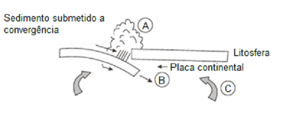
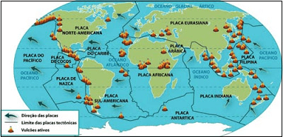
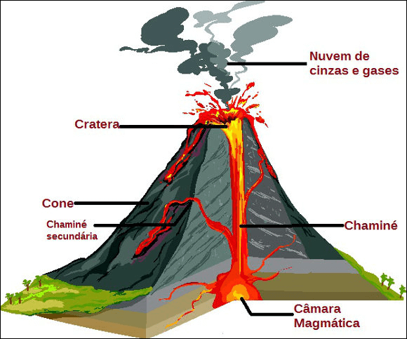
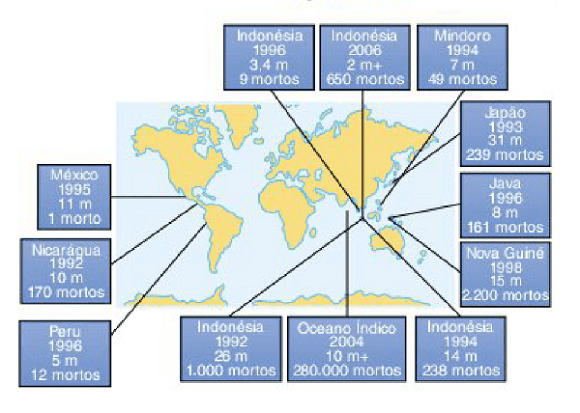
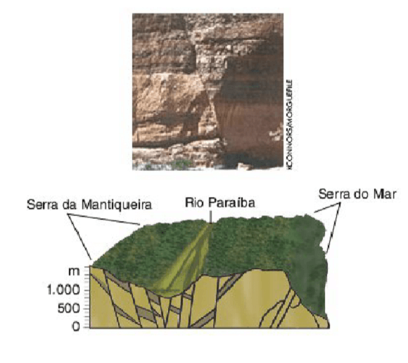
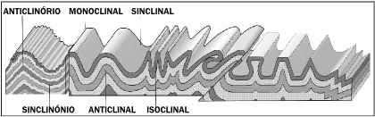

Conteúdo: Conteúdo: Relevo, Tectonismo, Epirogênese, Orogênese, vulcanismo, Magma, lava, Gêiseres, Hipocentro, Epicentro.
Objetivo: Objetivo: Entender o papel das forças internas na configuração das estruturas e formas de relevo terrestre.
Questão 01
(UFU 2018) O vulcão Shinmoedake, localizado na ilha japonesa de Kyushu, está ativo e lança fumaça a até 3 mil metros de altura. A Agência Meteorológica do Japão está alertando as pessoas a ficarem longe da montanha de 1.421 metros e advertindo que grandes rochas podem ser cuspidas até uma distância de 3 quilômetros.
(Disponível em: https://g1.globo.com/mundo/noticia/vulcao-shinmoedake-entra-em-erupcao-no-japao.ghtml Acesso em: 14 de mar, 2017).
a) ocorrência no Japão do fenômeno geológico apresentado está relacionada principalmente à
b) existência no seu território de áreas cratônicas.
c) grande incidência de rochas magmáticas no interior do país.
d) formação geológica antiga de suas ilhas.
Questão 02
(UFRGS 2010) A figura a seguir representa processos associados à tectônica de placas

Fonte: CASSETI, Valter. Elementos de geomorfologia. Goiânia, UFG, 1994.
Identifique os processos destacados pelas letras A, B e C, respectivamente.
a) orogenia – subducção – movimentos convectivos
b) orogenia – erosão – subducção.
c) dobramentos modernos – orogenia – movimentos convectivos.
d) erosão – subducção – dobramentos modernos.
e) dobramentos modernos – erosão – subducção.
Comentário:
Na figura representada, a letra “A” apresenta o movimento vertical e convergente da crosta terrestre e do relevo, caracterizando a orogenia, que, ao contrário da epirogenia, acontece em áreas instáveis, tal qual a da imagem. Na letra “B”, observa-se o movimento de subducção da placa tectônica mais pesada, que afunda no magma do manto superior. Já na letra “C” estão representadas as células de convecção do mesmo magma, principal causador do movimento das placas. Alternativa correta: letra A
Questão 03
(ENEM 2017) O terremoto de 8,8 na escala Richter que atingiu a costa oeste do Chile, em fevereiro, provocou mudanças significativas no mapa da região. Segundo uma análise preliminar, toda a cidade de Concepción se deslocou pelo menos três metros para o oeste. Buenos Aires moveu-se cerca de 2,5 centímetros para oeste, enquanto Santiago, mais próxima do local do evento, deslocou-se quase 30 centímetros para o oeste-sudoeste. As cidades de Valparaíso, no Chile, e Mendoza, na Argentina, também tiveram suas posições alteradas significativamente (13,4 centímetros e 8,8 centímetros, respectivamente).
Revista InfoGNSS, Curitiba, ano 6, n. 31, 2010
No texto, destaca-se um tipo de evento geológico frequente em determinadas partes da superfície terrestre. Esses eventos estão concentrados em:

a) áreas vulcânicas, onde o material magmático se eleva, formando cordilheiras.
b) faixas costeiras, onde o assoalho oceânico recebe sedimentos, provocando tsunamis.
c) estreitas faixas de intensidade sísmica, no contato das placas tectônicas, próximas a dobramentos modernos.
d) escudos cristalinos, onde as rochas são submetidas aos processos de intemperismo, com alterações bruscas de temperatura.
e) áreas de bacias sedimentares antigas, localizadas no centro das placas tectônicas, em regiões conhecidas como pontos quentes.
A região descrita abrange o choque das placas tectônicas de Nazca e Sul-Americana na costa oeste do continente americano. Assim, os movimentos orogênicos promovem abalos sísmicos que resultam em terremotos de grande intensidade típicos de dobramentos modernos.
a) Incorreta. Há uma inversão de eventos uma vez que os vulcões surgem destes eventos. Há ainda um equívoco ao atribuir a formação das grandes cordilheiras ao vulcanismo. Na verdade, elas são resultado dos dobramentos das placas nas áreas de colisão.
b) Incorreta. Os tsunamis são formados a partir de terremotos ocorridos dentro dos oceanos e acima vimos que estes são reflexos em forma de tremor da energia liberada pelos impactos tectônicos.
c) Correta. Como explicado anteriormente, tal evento decorre da atividade sísmica (terremotos) associada à ação tectônica que também forma os dobramentos modernos.
d) Incorreta. Os escudos cristalinos em geral localizam-se em áreas estáveis sem grandes alterações geológicas e o clima em nada interfere nos eventos tectônicos.
e) Incorreta. As bacias sedimentares localizam-se em áreas de formação de rochas por deposição de sedimentos, onde as alterações geológicas não são um fator recorrente. A associação bacias sedimentares e terremotos é irrelevante, pois a primeira não é a causa do segundo.
Questão 04
(FUVEST 2008) O vulcanismo é um dos processos da dinâmica terrestre que sempre encantou e amedrontou a humanidade, existindo diversos registros históricos referentes a esse processo. Sabe-se que as atividades vulcânicas trazem novos materiais para locais próximos à superfície terrestre.

A esse respeito, pode-se afirmar corretamente que o vulcanismo
a) é um dos poucos processos de liberação de energia interna que continuará ocorrendo indefinidamente na história evolutiva da Terra
b) é um fenômeno tipicamente terrestre, sem paralelo em outros planetas, pelo que se conhece atualmente.
c) traz para a atmosfera materiais nos estados líquido e gasoso, tendo em vista originarem-se de todas as camadas internas da Terra.
d) ocorre, quando aberturas na crosta aliviam a pressão interna, permitindo a ascensão de novos materiais e mudanças em seus estados físicos.
e) é o processo responsável pelo movimento das placas tectônicas, causando seu rompimento e o lançamento de materiais fluidos.
As atividades vulcânicas são comuns em áreas de instabilidade geológica, ou seja, na zona de encontro entre placas tectônicas, que são segmentações da crosta terrestre. A movimentação dessas placas pode fazer a superfície ceder à pressão interna e gerar a ascensão de materiais magmáticos.
Questão 05
(IFRR 2018) O vulcanismo é um fenômeno natural importante, que acontece na crosta terrestre e principalmente no fundo dos oceanos, que cobrem 2/3 da superfície de nosso planeta, totalmente formados de lavas, onde também encontramos a mais colossal cadeia montanhosa com cerca de 70000 Km de comprimento. Um vulcão constantemente expelindo lava escaldante pode parecer amedrontador. Apesar de assustador, o vulcanismo teve papel determinante nos primórdios da formação geológica de nosso globo e continua atuante no processo de modelagem do relevo terrestre.
Sobre a importância desse fenômeno, são verdadeiras as seguintes alternativas, exceto:
a) é responsável pelo aparecimento de novas terras e na subsistência de milhares de pessoas que vivem e cultivam as ricas terras de seus arredores.
b) a emissão de pedra vulcânica é grande suprimento de substituição de carvão mineral, fonte de matéria prima para as indústrias petroquímicas dos países altamente industrializados.
c) movimenta a economia de ilhas como a do Havaí e garante emprego e renda para a população local através do turismo.
d) a poeira e as cinzas vulcânicas, tornam os solos bem mais férteis, para o desenvolvimento do setor agrário.
e) proveem grande riquezas de jazidas metalíferas como as de cobre, zinco, magnésio, chumbo, mercúrio e outros, das quais a humanidade usufrui.
Colocar os comentários aqui.
Questão 06
(UFSM-RS) Observe o mapa. Nele estão marcados os principais eventos de tsunami que ocorreram na década de 1990, com os respectivos locais, altura das ondas e número de mortes.

A respeito da distribuição espacial desses eventos, é correto afirmar:
a) Estão associados às grandes células de alta pressão tropical, que produzem fortes movimentos nas águas oceânicas.
b) Originam-se sempre a partir de movimentos sísmicos na área da plataforma continental, chegando rapidamente às zonas litorâneas.
c) São mais comuns no Oceano Pacífico, devido à maior circulação de correntes frias.
d) Sua ocorrência é completamente aleatória, sendo praticamente impossível prever o seu aparecimento.
e) Associam-se a movimentos tectônicos nas zonas de subducção, onde há o contato de placas.
Questão 07
(Unifesp 2004) A foto e a figura representam um mesmo fenômeno.

Fonte: V. Leinz, Geologia Geral, 1983.
a) intrusão magmática.
b) dobra tectônica.
c) sinclinal ascendente.
d) falha geológica.
e) anticlinal descendente.
Questão 08
(UCS) O tectonismo é definido como um movimento lento e prolongado da crosta terrestre, resultante da movimentação do magma pastoso. Observe a figura abaixo

A TERRA. 5. ed. São Paulo: Ática, 1997. p.15. Formação causada pelo tectonismo
Assinale a alternativa que indica o tipo de formação representado na figura
a) Movimento resultante das forças internas horizontais, conhecido como epirogênese
b) Formação de Horst, encontrada nas fossas tectônicas localizadas no fundo dos oceanos
c) Resultado do movimento de compressão lateral sofrida por uma determinada área de rochas não resistentes, o qual recebe o nome de dobras
d) Deslocamento de blocos provocado pelo choque de placas tectônicas, ocasionando a formação de estruturas falhadas, conhecidas como Graben.
e) Soerguimento de uma falha por meio de pressões internas verticais, o que resulta em blocos montanhosos, como, por exemplo, a formação da Cordilheira dos Andes.
O tectonismo provoca uma série de alterações nas formas de relevo. Na figura destacada no exercício, as morfologias “anticlinal”, “isoclinal”, “monoclinal” e “sinclinal” são típicas dos dobramentos, também conhecidos simplesmente como dobras. Elas são ondulações convexas ou côncavas que surgem em corpos inicialmente planos. Alternativa correta: letra C
Questão 09
Os terremotos de grande magnitude e intensidade ocorrem principalmente em locais onde há o encontro de diferentes placas tectônicas. Essas áreas são denominadas:
a) Zonas de divergência
b) Epicentro
c) Deriva continental
d) Zonas de convergência
e) Escala Richter
a) Falso – Nas zonas de divergência ocorre o movimento de afastamento de uma placa tectônica em relação à outra
b) Falso – É ponto da superfície terrestre mais próximo ao centro de um abalo sísmico, ou seja, é o principal local que sofre com as vibrações do abalo.
c) Falso – Deriva continental é uma teoria que comprova que a crosta terrestre é uma camada rochosa descontinua, apresentando vários fragmentos, denominadas placas litosféricas ou placas tectônicas.
d) Verdadeiro – O encontro de diferentes placas tectônicas ocorre em áreas denominadas zonas de convergência. Essas áreas apresentam instabilidade tectônica, sendo vulneráveis à ocorrência de terremotos.
e) Falso – É uma escala que mede a magnitude do terremoto. Foi desenvolvida pelo sismólogo estadunidense Charles F. Richter.
Questão 10
Unesp 2011) As quatro afirmações que se seguem serão correlacionadas aos seguintes termos:
(1) vulcanismo
(2) terremoto
(3) epicentro
(4) hipocentro
a. Os movimentos das placas tectônicas geram vibrações, que podem ocorrer no contato entre duas placas (caso mais frequente) ou no interior de uma delas. O ponto onde se inicia a ruptura e a liberação das tensões acumuladas é chamado de foco do tremor.
b. Com o lento movimento das placas litosféricas, da ordem de alguns centímetros por ano, tensões vão se acumulando em vários pontos, principalmente perto de suas bordas. As tensões, que se acumulam lentamente, deformam as rochas; quando o limite de resistência das rochas é atingido, ocorre uma ruptura, com um deslocamento abrupto, gerando vibrações que se propagam em todas as direções.
c. A partir do ponto onde se inicia a ruptura, há a liberação das tensões acumuladas, que se projetam na superfície das placas tectônicas.
d. É a liberação espetacular do calor interno terrestre, acumulado através dos tempos, sendo considerado fonte de observação científica das entranhas da Terra, uma vez que as lavas, os gases e as cinzas fornecem novos conhecimentos de como os minerais são formados. Esse fluxo de calor, por sua vez, é o componente essencial na dinâmica de criação e destruição da crosta, tendo papel essencial, desde os primórdios da evolução geológica
(Wilson Teixeira, et al. Decifrando a Terra, 2003. Adaptado
Os termos e as afirmações estão corretamente associados em
a) 1d, 2b, 3a, 4c.
b) 1b, 2a, 3c, 4d
c) 1c, 2d, 3b, 4a.
d) 1a, 2c, 3d, 4b
e) 1d, 2b, 3c, 4a.